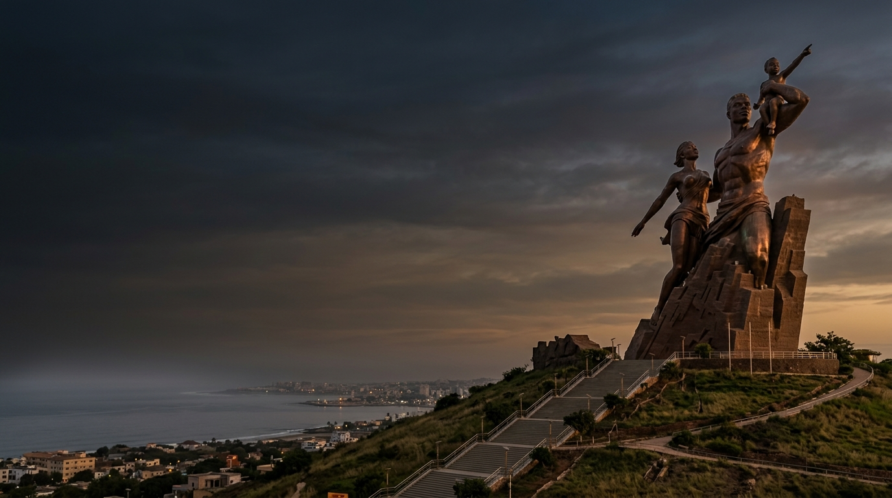

01
Racines & Mémoire
Faux lions, Kassak, danses et rythmes ancestraux : le Festival donne une scène aux expressions culturelles que le temps menace d'effacer.

Le rendez-vous incontournable de l'artisanat, des arts vivants, de l'entrepreneuriat culturel et de la coopération internationale au Sénégal.
Ouverture officielle dans
08 Août 2026 • 09h30 • Monument de la Renaissance
00
Jours
00
Heures
00
Minutes
00
Secondes
Merci à tous ! Rendez-vous à la prochaine édition.
+50
Exposants & Artisans
Pays Invités
Burkina Faso, Cap-Vert...
2 Jours
de célébration
100%
Patrimoine & Innovation
01
Faux lions, Kassak, danses et rythmes ancestraux : le Festival donne une scène aux expressions culturelles que le temps menace d'effacer.
02
Artisans, stylistes, designers et porteurs de projets : un village d'exposition où le savoir-faire africain devient une force économique.
03
Sous le regard du Monument, ambassades, institutions et délégations invitées tissent ensemble une coopération culturelle durable.
Porté avec ambition par son promoteur Mouhamadou Ibrahima Ndiaye, le Festival Tiers Monde fait de Dakar un carrefour d'excellence où les traditions séculaires dialoguent avec les industries créatives contemporaines.
Installé sur le site emblématique du Monument de la Renaissance Africaine, l'événement rassemble artisans, artistes, délégations diplomatiques, institutions et grand public autour d'une ambition commune : faire de la culture un levier concret de paix, de coopération et de prospérité partagée.
« Préserver nos racines tout en ouvrant de nouveaux marchés à nos créateurs : c'est ainsi que la culture devient une véritable force diplomatique. »
Mouhamadou Ibrahima Ndiaye
Promoteur du Festival Tiers Monde


Sauvegarde et valorisation des expressions culturelles menacées : Faux lions (Simb), Kassak, danses rituelles, contes et rythmes ancestraux transmis aux nouvelles générations.
Une vitrine commerciale d'envergure et un espace B2B dédié aux artisans, créateurs de mode, designers, transformateurs locaux et porteurs de projets culturels.
Un pont vivant entre les peuples favorisant les échanges institutionnels, consulaires et artistiques avec les pays partenaires et délégations invitées.
Chaque pays invité dispose d'un pavillon pour présenter son artisanat, ses arts vivants et sa culture. Survolez ou touchez une carte pour la découvrir.
Découvrir le pavillon
Pavillon national
Terre de la Teranga, Dakar accueille le Festival au pied du Monument de la Renaissance Africaine.
Faux lions • Kassak • Sabar
Découvrir le pavillon
Pavillon invité
Une délégation invitée pour partager son artisanat, ses arts vivants et ses savoir-faire avec le public dakarois.
Artisanat • Arts vivants
Découvrir le pavillon
Pavillon invité
Un pavillon pour partager sa culture et renforcer la coopération culturelle avec le Sénégal et l'Afrique de l'Ouest.
Culture • Coopération
Rejoindre les pays invités
Ambassades & délégations
Ambassades, instituts culturels et délégations : présentez votre pays au cœur de Dakar.
Découvrez nos préparatifs, nos audiences diplomatiques à Dakar et les visuels officiels de l'édition des 08 & 09 Août 2026.
Allocution du promoteur Mouhamadou Ibrahima Ndiaye, discours des autorités sénégalaises et des ambassadeurs des pays invités (Burkina Faso, Cap-Vert et délégations partenaires).
Coupure du ruban symbolique, découverte des +50 stands d'artisanat d'art, mode, sculpture, gastronomie et pavillons nationaux.
Tables rondes avec décideurs, entrepreneurs culturels, chambres de métiers et partenaires internationaux sur le financement et l'exportation du savoir-faire africain.
Célébration vibrante des patrimoines vivants du Sénégal et d'Afrique de l'Ouest : troupes traditionnelles, percussions sabar et rencontres interculturelles.
Sélectionnez la formule adaptée à votre activité pour pré-remplir votre demande. Notre équipe vous accompagne pour l'aménagement sur-mesure de votre espace.
Conçu pour les artisans d'art, sculpteurs, bijoutiers, tisserands, jeunes stylistes et producteurs du terroir.
Emplacement à forte visibilité pour les maisons de couture, marques de design, entreprises agroalimentaires et PME.
Espace de prestige destiné aux ambassades, délégations officielles, ministères, chambres consulaires et ONG.
Artisans, maisons de couture, designers, producteurs gastronomiques, institutions ou ONG : rejoignez la vitrine officielle du Festival Tiers Monde et bénéficiez d'une exposition exceptionnelle.
Exposez au pied du Monument de la Renaissance Africaine devant des milliers de visiteurs, médias nationaux et délégations étrangères.
Commercialisez directement vos créations, œuvres et spécialités auprès d'un public qualifié pendant les deux journées du festival.
Échangez avec les représentants d'ambassades, d'institutions culturelles, d'ONG et d'investisseurs présents sur le village B2B.
Remplissez vos coordonnées ci-dessous. Notre commission commerciale vous recontacte sous 24h pour l'attribution de votre emplacement.
Finalisez l'envoi instantané vers notre équipe :
Institutions culturelles, représentations diplomatiques et entreprises citoyennes s'unissent au Monument de la Renaissance Africaine pour bâtir un avenir commun par la culture.
Visibilité premium sur la Grande Scène et les médias, pavillon VIP dédié, prise de parole protocolaire et accès privilégié aux délégations diplomatiques.
Présence officielle sur les supports de communication, stand institutionnel dans l'espace B2B et invitations VIP aux panels et spectacles.
Affichage de votre marque sur le village du festival, nos réseaux officiels et intégration dans le catalogue officiel des partenaires.
Ministères, collectivités territoriales et institutions dédiées à la culture et à l'artisanat.
Représentations diplomatiques, délégations officielles et pavillons internationaux.
Entreprises citoyennes, banques, télécoms et fondations engagées pour les industries créatives.
Chaînes TV, radios, presse culturelle et plateformes digitales panafricaines.
Situé sur la Colline des Mamelles à Ouakam (Dakar), le site offre un panorama exceptionnel sur l'Atlantique et dispose d'esplanades adaptées à l'accueil des exposants, délégations et visiteurs.
Monument de la Renaissance Africaine, Colline des Mamelles, Ouakam — Dakar
10 min des Almadies / Ngor • 15 min du Plateau • 45 min de l'Aéroport AIBD
Sud Foire, Dakar, Sénégal — Accueil exposants & partenaires